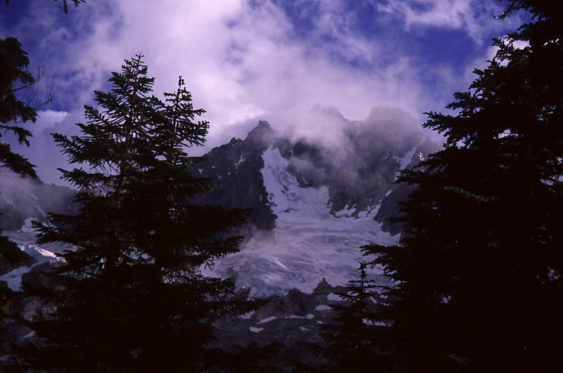
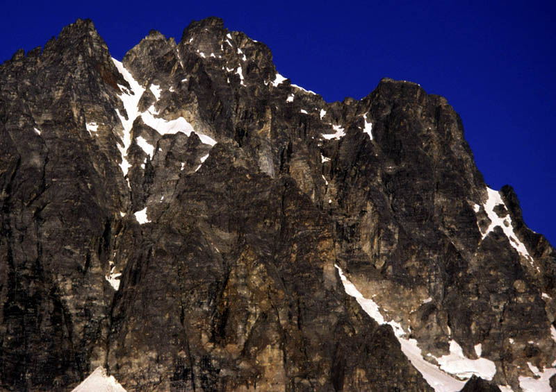
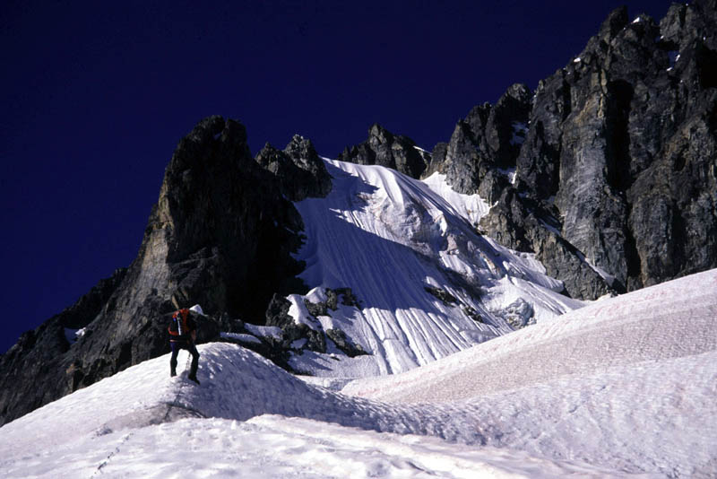
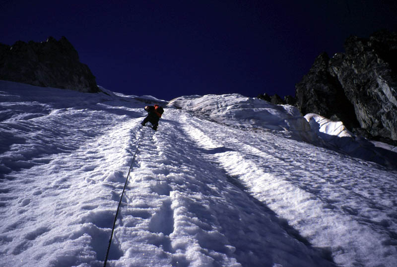
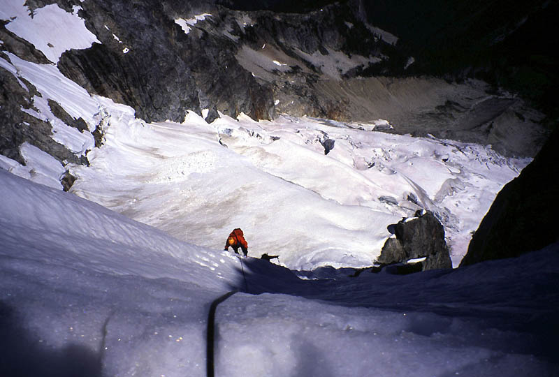
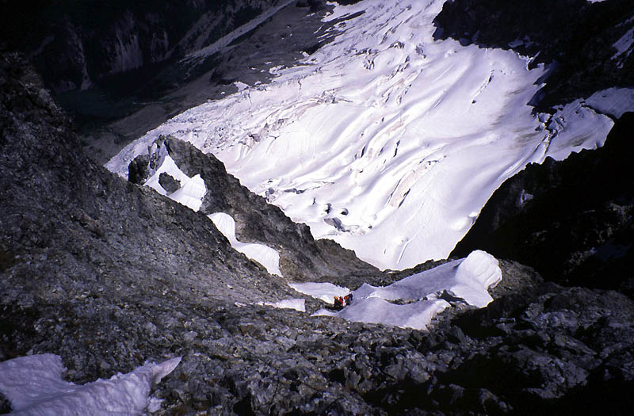
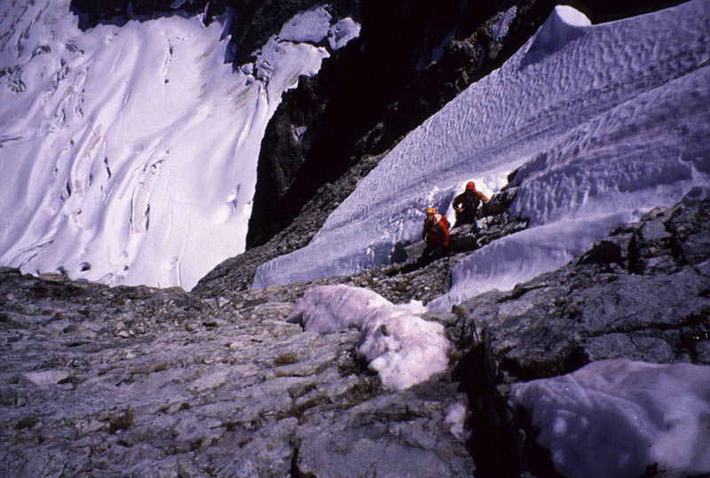
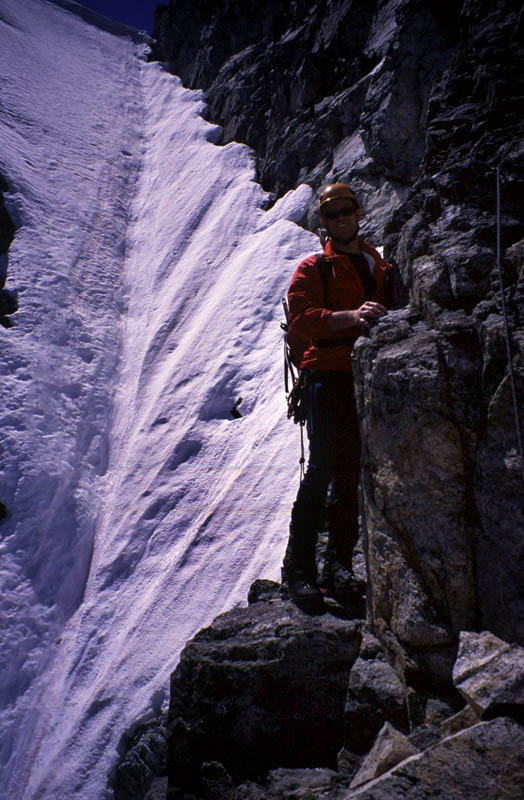
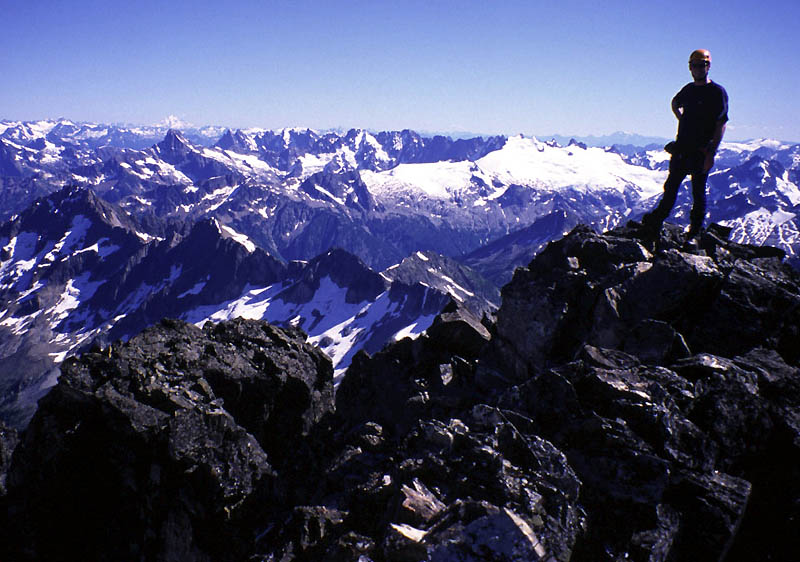
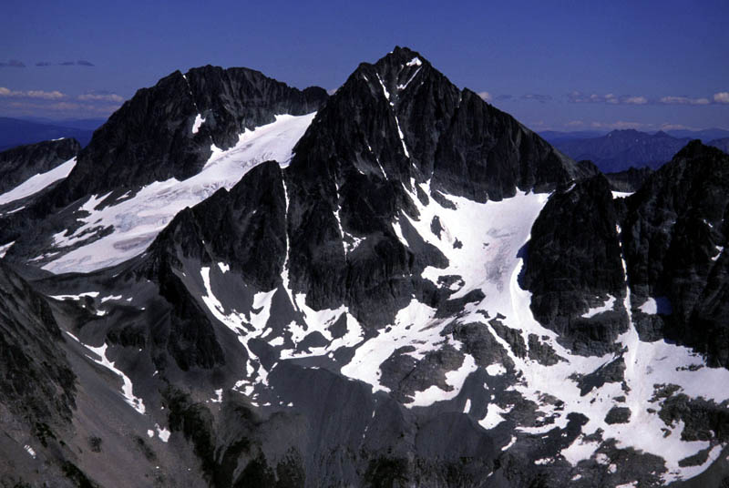

Mount Redoubt Northeast Face
Northeast Face, Snow/Ice, III, 5.2
July 16-18, 2005
Check out the REDOUBT MOVIE, a sort of music video of the event. It is large, but if you like scenes of climbing steep snow in beautiful alpine terrain it is worth it (20 MB). The Northeast Face of Redoubt had been on our list for a while, and I always thought of it as an August climb for some reason. However, as we read a few trip reports of the region, I started getting alarmed because sometimes the face is difficult to access by that time thanks to wide bergschrunds or a generally broken-up glacier. Plus, the low snow year could make it even harder. It seemed that the most successful parties went as early as June, in which case the steep ice wall on the face was straightforward snow. Then we kept having bad weather on the weekends. Once in June we slept at the Lake Ann trailhead in vain, filling our bivy sacks with rain before dejectedly going home at first light. Drew Brayshaw answered my query about conditions with a terse “should be good. The bad snow is more of a Washington thing.” Hmm, thought I. By the time everything came together another two weeks had passed. Theron, Robert and I readied for the climb, grimacing as we threw full-shank mountain boots in the car, something we only take when steep snow and ice is expected. Those things tear up your feet on trails though, and we were right to anticipate some black-and-blue feet by the end of the adventure.
Sergio’s trip report got us thinking that it would be a pretty easy approach. Looking back I’m not sure where that idea came from (wishful thinking?), so we weren’t ready to walk from the trailhead until 3 pm Saturday. As the miles of brushy road-walking piled up, we started to hope to get to camp before dark. It’s a pretty long drive from Seattle, and the road gets very rough before the end. Without a high-clearance vehicle we would have had another mile or so to walk.
The border was marked by an obelisk in deep tangled forest, and the trail in the U.S. was first marked by numerous large and tedious blowdowns. After 1/2 mile or so it improved markedly and we passed the miles in conversation. Robert and I ribbed Theron about “Dubya” and the clear-cuts he might like to pursue in the area, while he regailed us with tales of former vice-president Al Gore’s pomposity and “high-falutin’” manner. He did climb Mt. Rainier though and I think that oughta mean something in our little sect.
After too long a time, we reached the base of an enormous waterfall. It was absolutely stunning. We hopped rocks to it’s base and then scrambled up slippery rocks with the aid of a fixed line, getting soaked by waves of spray from the thundering volume. Our boots were especially treacherous on this terrain, having no ability to grip or give with the angle. Higher we climbed a steep scrambly trail on the left side of the falls, getting surreal glimpses of roaring water just on the other side of a tree branch. This section was muddy but entertaining after the long valley flats.
I reached the top of the falls first, and stood agog at Mt. Redoubt shining above the trees. Robert came up and I solemnly informed him he was going to defecate himself with sheer joy - for the face looked in good nick! Theron arrived and I imitated the evil child Mordred, laughing in the forest as round table knights hung from the gibbet! He got a real kick out of that which was great after the tiring hike!
Now we decided to hike all the way up to Ouzel Lake (not marked on the map, but the obvious lake at the valley head), because bashing directly across to the face might require numerous creek wadings. Due to the hard rain of recent days we’d already seen flooded sections of forest and thought the wade might be waist deep too. Ouzel Lake would be a great base camp if we had energy to climb Mt. Spickard on the third day (spoiler: we didn’t!).
But the hike up there felt really long, going over boulders and moraines, gaining 1000 feet. Once at the lake, we were sheathed in damp mist and I cursed grumpily about crossing a stream Theron had waded through in his plastic boots. I had to go a good ways upstream to preserve some amount of integrity for my leather boots. Robert told us about a nirvana-like higher campsite and couldn’t believe Theron wanted to lead us down to the lakeshore with it’s bevy of mosqitoes (I couldn’t tell the difference, but I hated any amount of extra walking by this point). I had brought the bug juice, but the bottle came unscrewed in my pocket, losing it all. So we ate in the damp cloud, swatting bugs and trying to stay psyched for the next day. Robert and I slept in the Betamid, and Theron provided the welcome news that the clouds had cleared by full dark. We slept pretty well until 4 am, then quickly arose and trudged off under a clear dawn.
We followed the occasional cairn up a slabby, scrambly ridge to it’s top, then left the marked route for a cross-country traverse to a rib at 6,000 feet. At the rib, we could see the upper part of our route in the sun, and pieced out a way leading across the glacier to it. We descended 100 feet from the rib, then climbed snow to the glacier’s edge to rope up. Robert led us across the glacier for an hour, weaving our way across crevasses, making at least one exciting jump over a deep dark blue chasm. Near the end of our journey, I led us a steep headwall for a fun pitch of AI2 ice climbing in “hero” ice/neve. After another easier headwall I led us up to a belay spot in a crevasse at the bottom right side of the intimidating snow and ice face.
Continuing for the first lead on the face I wondered if we’d find easy step kicking snow, rotten “horror” snow, or intimidating ice. The first pitch was definitely the former: a few kicks made a great step and axe shaft placements were solid too. I went ahead and built a belay station after 60 meters and brought Robert and Theron up. It was a really cool place to be, especially when I thought about how steep it looked from the trail in the valley below!
Theron led the second pitch, entering a section of snow that had baked in the morning sun for an hour. He could make good steps for us, but the axe placements were quite poor. The angle seemed to steepen a bit too. We simul-climbed for 35 additional meters until he could find a good belay stance. Theron brought us up to a cool little ice cave with a bomber ice screw for protection. I led off again for an enjoyable 55 meter pitch with two sections of ice and three sections of steep snow. I gradually traversed leftward, making for rock towers where I hoped to place a nut or piton. Access to the rock was difficult, but I could build a nice belay station in a partially filled in crevasse next to the rock, again with bomber ice screw protection. It was fun peeking over the rim of my little house and looking down the steep couloir as my companions climbed.
We thought there was one more pitch before the ice arete. The start was ugly, requiring too much flirtation with steep rotten snow on a rightward trending line. Theron led carefully out then sped up markedly after 40 meters. Robert and I simul-climbed behind, amazed by the steep wall of steps Theron had left and the huge rock walls on our right. At one point there was a rumble and a cascades of rocks shot out from gullies in mid-face. On the arete we stopped for a conference and some food. It was nice to no longer have gravity pulling at us from the ice face!
We were interested in climbing a rock variation of the route above the arete but had little information on it. We figured to make a snow traverse leftward below a wall, then head up and behind the wall on rock if possible. I led the snow traverse, careful to make good steps as I rounded two or three ribs and lost sight of my partners. I remembered a story of a party nearly falling here on rotten snow high above the Depot Glacier. Happily, I found an entrance onto rock where I soon placed a hex and a titanium piton for a belay. But then I thought I’d keep climbing instead to make time, so I continued up the 4th-class rock in crampons. Pretty soon it felt kind of hard! After making some mixed snow/rock moves, and holding my breath on a delicate mantle I realized I needed to build a static belay. From a solid sling around a horn, I brought Robert and Theron up to the rock. Robert had the good idea to belay me higher from the piton/hex anchor at the base of the rock. I removed crampons and ran it out to the top of the rock step and a good stance. Here we had a choice to pursue the rock climb or exit the route normally via another few pitches in a steep snow couloir. We had reached the top of the ice face at noon, but now it was almost three. We also wondered which way to go around towers on the rock climb and were pretty sure that would take some time to figure out. So we decided on the regular finish. Theron was especially disappointed as he wanted to get out of his wet snow boots (he forgot to bring gaitors).
Robert led a descending traverse off the rock into the couloir, then an interesting climb to an excellent belay cave in the moat between snow and rock, getting good rock protection along the way. Another pitch of straightforward snow led to a high notch. Theron and I followed without crampons to save time, and emerged smiling at Robert’s belay/picnic spot. We were happy to be done with technical climbing and eagerly divested ourselves of slings, nuts and screws. After a bagel and hummus, we descended a gully 100 feet, then made a delicate traverse on a brown ledge around the corner (unprotected 5th class, so we could avoid a creepy ice patch). We connected to the regular route, dropped our packs and scrambled up gullies for several hundred feet of enjoyable movement. We reached a mandatory steep snow couloir and cursed at leaving our axes below. No matter, we grabbed dagger-like rocks and followed Theron who kicked good steps up to a steep notch with a “cannonhole.” We crabbed through the hole, then scrambled steep and exposed rock on the north side. From here, Robert saw a sling atop a tower below, which we might have run into on the rock variation of the route. Soon we stood on the summit!
We had to hang out a good while. I took off my boots and admired the north face of Bear Mountain, black and forbidding. Mt. Prophet looked pretty neat from the north. Sleese was an inspiring black tower. We recognized some names in the summit register, including Pete Schoening from 10 or so years back. We saw Sergio, Eric and Darin’s names. The weather was warm and dry and the air was crystal clear in the near miles, although Rainier was almost lost in distant haze.
We retraced our steps, Robert using his prussik cord to fashion a temporary backup to a handline at the top of the steep snow section. Once at our packs, we continued down loose ledges to snow, good for standing glissades and plunge stepping. Sections of rock and more snow led ever down to the south, finally placing us below the Flying Buttress after a last section of rock scrambling. A tiring walk up to a col, and then a long nearly-level journey across the Redoubt Glacier followed. Oh, I lacked courage to make a big jump from the ridge to the glacier until I got Theron to throw my pack down first for me. Still, it was hard to do, I kept thinking of myself with a broken ankle! But once the 10 foot jump was made, it seemed very easy.
The late afternoon sun followed us down the glacier to slabs, then lower slabs that connected with our ascent trail of the morning. We arrived at camp very tired sometime before 8 pm, a 15 hour day. Robert was especially beat, citing lots of overtime and few mountain visits. He ate a little then went right to sleep. I followed and Theron trudged around a while before turning in as well.
In the morning we slept in, no way would we clomp up 2000 feet of scree to hit the glacier below Spickard. Slowly we got ready, and started hiking down around 10 am. The trip was definitely easier than on the way in, and political conversations in the deep forest seemed to speed us up. Back near the car, Robert treated us to beers and salmon that he had thoughtfully brought for the occasion. Mmm…delicious!!
On the drive out, we stopped at the west end of Chilliwack Lake where a beach invited us to go swimming. With Mount Redoubt visible high on the other side of the lake, we swam around in the cold water, happy for the chance to visit another high wild peak.
Thanks to Robert and Theron for the great trip! Thanks to Drew for the info, and Sergio Verdina and Darin Berdinka for web page beta (even though I had to retrieve Darin’s reports from www.archive.org!).
|
 The first view of the mountain |
|
 The route goes up and left |
|
 Below the ice face |
|
 On the snow/ice face |
|
 Robert climbing the face |
|
 Looking down from a rock pitch |
|
 Enjoying a rock pitch |
|
 Robert and the upper couloir |
|
 Robert on the summit, looking south |
|
 Mt. Spickard to the north |
{kind=link}
{kind=link}
{kind=link}
{kind=link}
{kind=link}
{kind=link}
{kind=link}
{kind=link}
{kind=link}
{kind=link}